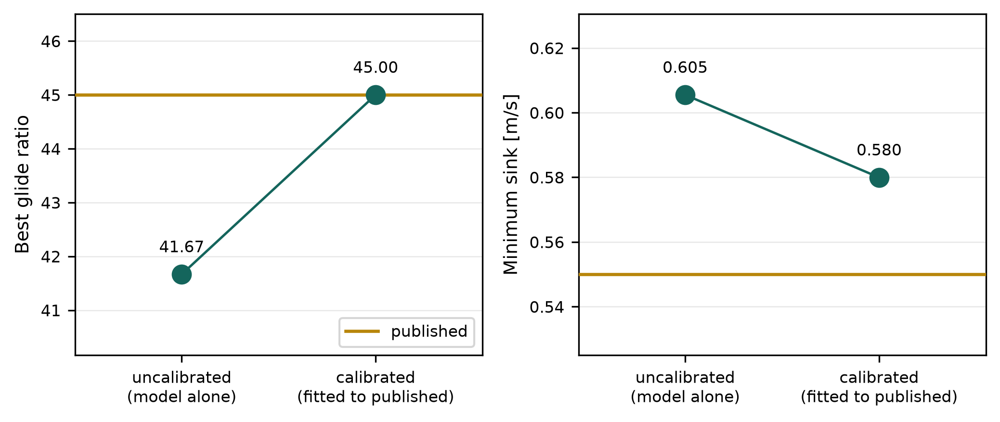

How does the reconstruction compare with published performance?
Show code
speeds = np.linspace(21.0, 55.0, 120)calibrated = calibrated_polar(speeds)# The same trimmed polar read with no calibration applied -- glide() takes the# offset as an argument, so this costs no further aero.uncalibrated = glide(calibrated, 0.0)best_raw =int(np.argmax(uncalibrated["L_over_D"]))best_cal =int(np.argmax(calibrated["L_over_D"]))sink_raw =float(np.min(uncalibrated["sink"]))sink_cal =float(np.min(calibrated["sink"]))offset = calibrated["drag_offset"]drag_excess =-offset / (calibrated["CD"][best_cal] + offset) *100sink_error = (sink_cal - SINK_MIN_PUBLISHED) / SINK_MIN_PUBLISHED *100# The calibration is only meaningful if it actually hit its target, and the# sign of the offset is the entry's finding -- so both are asserted rather# than described.assertabs(calibrated["L_over_D"][best_cal] - LD_MAX_PUBLISHED) <0.01assert offset <0, "offset is positive; the finding below is wrong"
0.580model minimum sink, m/s
0.550published, m/s
Answer. The reconstruction is draggier than the real aircraft, not cleaner: uncalibrated it glides at 41.67 against a published 45. Matching best glide needs a negative drag increment of -0.00120 — the build-up over-predicts drag by 8%. Minimum sink was held out of the fit and lands within 5.4% (Figure 1), at a different speed, lift coefficient and Reynolds number. One scalar transferring that far is the evidence; the residual sits where a laminar polar is hardest to predict.
Show code
fig, (ax_glide, ax_sink) = plt.subplots(1, 2, figsize=(7.0, 3.0))# Dots rather than bars, on an axis that does not start at zero. Bars from zero# compressed 41.7 against 45.0 into the same height and hid the entire finding;# a dot encodes no magnitude by length, so a zoomed axis misleads nobody.for axis, values, published, ylabel, fmt in [ (ax_glide, [uncalibrated["L_over_D"][best_raw], calibrated["L_over_D"][best_cal]], LD_MAX_PUBLISHED, "Best glide ratio", "{:.2f}"), (ax_sink, [sink_raw, sink_cal], SINK_MIN_PUBLISHED, "Minimum sink [m/s]", "{:.3f}"),]: axis.axhline(published, color="C1", lw=1.6, zorder=3, label="published") axis.plot([0, 1], values, "-o", ms=9, lw=1.2, color="C0", zorder=4)for position, value inenumerate(values): axis.annotate(fmt.format(value), xy=(position, value), xytext=(0, 11), textcoords="offset points", ha="center", fontsize=8) low =min(values + [published]) high =max(values + [published]) pad = (high - low) *0.45 axis.set_ylim(low - pad, high + pad) axis.set_xlim(-0.55, 1.55) axis.set_xticks([0, 1]) axis.set_xticklabels(["uncalibrated\n(model alone)","calibrated\n(fitted to published)"], fontsize=8) axis.set_ylabel(ylabel) axis.grid(axis="y", alpha=0.3)ax_glide.legend(loc="lower right", fontsize=8)plt.tight_layout()plt.show()

Figure 1: Best glide ratio and minimum sink, before and after one drag increment is fitted to the published best glide. The left panel matches by construction — it is what was fitted. The right panel was never fitted, so the gap remaining there is the model’s real error.
NoteThe method, as called
def calibrated_polar(speed, mass=MASS, altitude=0.0):""" The trimmed glide polar with this chapter's drag calibration already applied. Promoted the moment a third entry wanted it: trimming, calibrating and converting to glide quantities is the same three lines everywhere, and three consecutive repeated lines is exactly what rule 2 forbids. Keeping it in one place also means no entry can quietly calibrate against a different target than its neighbours. Costs whatever `trim_polar` costs -- about six AeroBuildup calls, regardless of how many speeds are asked for, because the secant iterates the whole speed array at once. `calibrate` itself costs nothing: the offset shifts CD without touching CL, so it runs on arrays that already exist. Returns the trimmed polar, the glide quantities and the offset in one dict, so an entry can quote the calibration it ran under rather than assume it. """ polar = trim_polar(speed, mass=mass, altitude=altitude) offset = calibrate(polar)return {**polar, **glide(polar, offset), "drag_offset": offset}